害虫问题

怎样确认食叶毛虫危害在有新鲜孔洞的叶片附近找幼虫，观察腹足，区分毛虫和叶蜂幼虫。
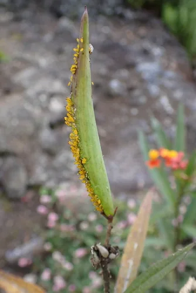
梨形小虫聚集在新梢上查看嫩梢和花蕾周围是否有成群的小虫、蜕皮及发黏的叶片。

怎样辨认叶片上的介壳虫检查叶脉附近或嫩枝上的小壳，比较壳下虫体和新叶上是否又有小虫附着。

怎样辨认条纹叶甲比较新叶与老叶的食痕，同时寻找仍在取食的甲虫或幼虫。

怎样辨认植物上的粉蚧拨开叶腋和老叶鞘，看白蜡下面是否有椭圆虫体。复查原本干净的生长点。

叶背有细小螨和细丝观察叶背是否有细丝、活动的小点和叶面失绿斑。

怎样辨认树木附近的天牛记下长触角成虫的特征，并在树上另找蛀孔和重新积起的木屑。

卷壳软体动物与黏液痕迹在潮湿傍晚检查盆沿、叶下方及附近的遮蔽物。

怎样辨认园艺植物上的象甲傍晚检查新咬出的叶缘缺刻，结合成虫的长吻和所在植物判断。

花和嫩叶上的细长小虫将花轻轻敲在白纸上，用放大镜查看细长小虫，并留意花瓣的刮擦状斑纹。

透明网翅小虫与浅色斑点观察叶背是否有网纹翅膀的小虫和黑色斑点，与叶面浅色小点对照。

善跳的楔形小虫轻碰叶片，观察虫体是否侧跳；拍摄背部外形及叶上褪色区。

鸢尾叶片出现水渍条纹，根茎内部蛀空鸢尾蛀虫的取食部位会随幼虫生长而改变。春天可能只伤一片叶；等到整丛叶片萎蔫，虫已进入地下根茎。检查时将受害叶和相连的根茎对照起来看。

梨叶表面被刮成褐色，叶脉仍完整梨实叶蜂类幼虫刮去叶片表面柔软的组织，常保留整片叶的轮廓。远看梨树或樱桃树仿佛遭灼伤，近看新受害叶片往往能找到正在取食的幼虫。
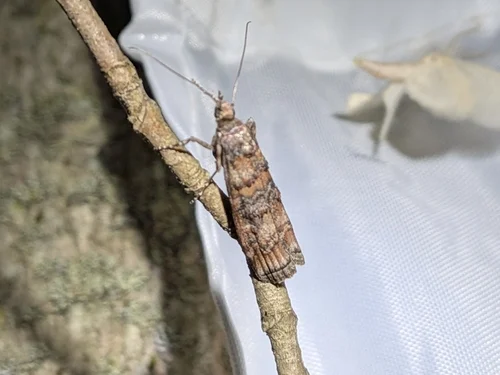
松枝轮生处出现大块树脂辨认松树蛀螟时，树脂团长在哪里很重要。主干轮生枝、折梢下方都要检查。弱枝连接处反复流脂，比任意一处树皮上的陈旧树脂团更有辨识力。

薄荷叶出现成片凹陷小点四线盲蝽刺吸嫩叶，留下的点状伤痕有时十分整齐。虫离开很久后，薄荷叶上仍会保留这些斑。应重点查看最新受害叶，并到邻近嫩枝上寻找虫体。

番茄嫩梢被吃光，附近留下粗大虫粪即使只有一头天蛾幼虫，也可能把番茄嫩梢啃得只剩茎柄。虫虽大，从上往下看却很容易漏掉。先用虫粪定位，再将视线移到枝条侧下方。
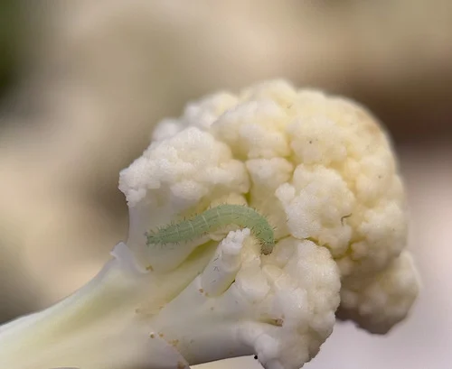
甘蓝叶上出现薄窗斑，小幼虫受扰会扭动小菜蛾幼虫可能与其他食叶幼虫同时出现在甘蓝上。把最初食痕的形状与活幼虫的动作结合观察更有效。老外叶上的一个大破洞通常难以鉴别虫种。
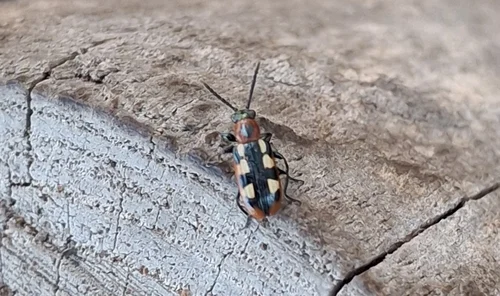
芦笋嫩茎上黏着直立的深色虫卵芦笋叶甲的危害分两个阶段。采笋时常见成虫和附着的卵；停采留茎后，幼虫和成虫又会取食羽状枝叶，影响多年生植株为翌年积累养分。

一翻叶就飞起一群白色小虫温室粉虱在发育的大部分时间里附着于叶背。一碰叶就飞起的成虫能指出检查位置；继续比较新叶和老叶，才能发现成虫飞散后仍留在原处的若虫。

幼苗一夜倒地，茎在土面附近被咬断地老虎夜间贴地取食，刚移栽的一行菜可能隔夜就倒几株。选择最新倒伏、断口完整的幼苗来看；如果原先从未见苗，仅凭缺株很难确定原因。

荚蒾叶只剩叶脉，细枝上可见成排卵痕荚蒾叶甲会在寄主两处留下证据。叶片记录幼虫和成虫的食痕，嫩枝上可能留有下一代卵。因此，即使受害叶已经落尽，休眠灌木仍有线索可查。

南瓜萎蔫，叶背有铜色卵块和灰色若虫南瓜蝽用刺吸式口器取食，常躲在叶背和茎下部。发现南瓜叶萎蔫时，应翻叶寻找卵块和能移动的若虫，综合判断是否正在受害。

真百合上有鲜红甲虫，披着黑团的幼虫啃叶百合负泥虫以鲜红色成虫最显眼，幼虫却很容易被漏掉。一片受害叶的正反面都值得看，叶背看起来像污泥的物质可能覆盖着仍在取食的幼虫。

成群条纹幼虫啃掉上一年松针欧洲松叶蜂幼虫群集取食，可能出现一枝光秃、旁枝仍绿的情况。保留下来的松针属于哪一年，有助于判断危害。分段检查枝梢再判断顶端是否死亡。

枝条末端的丝网把叶片一起包住落叶树枝端在季末出现的丝网可能容纳整群美国白蛾幼虫。重点看网内是否包着叶片、活动区域是否扩大；陈旧空网总面积的辨识价值较低。
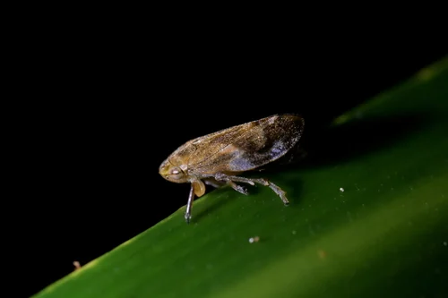
嫩茎叶腋间有白色泡沫团草沫蝉若虫取食嫩茎时，会用一团湿泡沫包住自己。深绿植株上的白团格外显眼。拨开一处新鲜泡沫，往往比查看一大片干痕更容易找到原因。

苹果表皮凹陷，剖开可见褐色弯曲虫道苹果实蝇幼虫在果肉中穿行时，果形可能仍大致正常。果实成熟后，果肉内部的褐色痕迹往往更明显。结合多枚果实的表皮与内部症状判断。

一枝加拿大一枝黄花类植物的茎上长出球形瘿一枝黄花瘿蝇会诱导寄主茎部形成虫瘿，包住发育中的幼虫。花叶消失后，球状茎瘿仍能一直保留到冬天，通常可以原位观察。

榆树叶缘出现曲折的之字形食痕榆树曲线刻叶蜂低龄幼虫会在侧脉间咬出特殊曲线。轻度受损叶比严重残缺的叶更容易鉴别，拍照时既要记录大范围缺损，也要留下一道初期窄食痕。

春季樱属树的枝杈间出现丝巢美洲天幕毛虫在枝杈间共用丝巢，出巢后到附近叶片取食。结合寄主、季节和叶片相对巢的位置，可以与其他结网性毛虫区分。

南瓜藤突然萎蔫，茎基蛀孔外堆有粗屑南瓜蛀茎蛾幼虫躲在藤内取食，叶片虽下垂，虫体却看不见。给萎蔫南瓜追加浇水前，应先查茎基有无排出的蛀屑，并与同株另一条藤比较。

金属光泽甲虫在向阳玫瑰上群聚，啃叶只剩叶脉日本丽金龟常聚集在喜食的花朵或灌木向阳面。局部花瓣可能已残缺，旁边叶片却几乎完好。确定是哪种金龟子，仍需近看成虫特征。

花瓣出现不规则破洞，白天却很难找到害虫蠼螋白天躲在窄缝，夜里出来活动。它既会啃食柔嫩的园艺植物，也会捕食其他小虫。要确定花朵是否由它咬伤，观察时间很重要。

周期蝉产卵与细枝枯梢周期蝉成虫消失后，绿树上还可能陆续出现零星枯褐枝梢。雌虫在细枝上划缝产卵，伤处以上的枝梢可能萎蔫或折断，而其他树冠仍然健康。
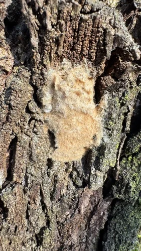
怎样辨认舞毒蛾卵块舞毒蛾幼虫会大量取食栎叶。叶片损伤来自幼虫，成蛾则留下下一季的线索，即覆有浅黄褐色绒毛的卵块。

木兰细枝上的软蚧木兰叶面发黏时，沿着滴落方向向上检查嫩枝上是否有蜡质隆起。
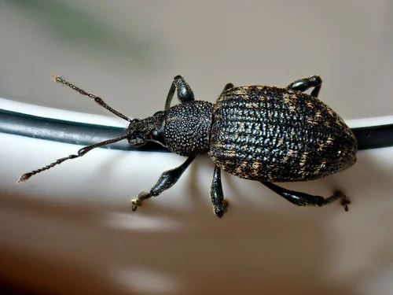
观赏植物上的黑葡萄象甲黑葡萄象甲在观赏植物上有两类危害。成虫夜间咬食叶缘，浅色幼虫在土中啃根，盆栽苗的根系尤其值得检查。
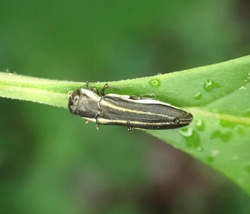
衰弱栎树上的双线栗吉丁虫双线栗吉丁虫常侵害已经衰弱的栎树。幼虫在树皮下蛀食，影响输导。树木可能同时承受多种胁迫，因此场地近期发生过什么也应查清。

怎样辨认条纹黄瓜叶甲寻找黄底三条纵纹的甲虫，分别检查瓜苗的新咬孔与瓜花内的成虫。
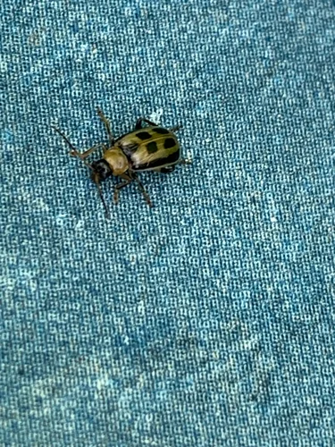
豆叶甲对叶片和豆荚的危害豆叶甲会啃食嫩叶，也会在豆荚表面留下浅伤。若收获的是鲜食整荚，表面损伤比取籽栽培更影响品质。

月季叶蜂的刮食痕迹月季叶脉之间有透光的刮痕。幼虫要到叶背另找。

辨认卫矛枝叶上的矢尖蚧比较叶背的白色窄壳与枝叶上的褐色壳，再查新附着的幼虫是否仍在增加。
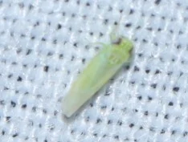
马铃薯小绿叶蝉与叶尖焦枯马铃薯小绿叶蝉取食后，叶尖可出现黄褐色楔形焦斑。症状有时会比虫体出现得晚，要趁虫仍活动时检查焦斑旁边的绿叶。

苹果叶背的帐篷状潜斑幼虫在苹果叶内取食，叶背靠近叶脉处可见浅色斑块，表皮拱起如小帐篷。
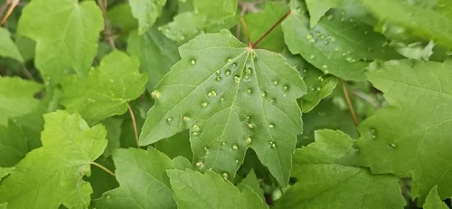
槭树叶片上的袋状虫瘿先认槭叶表面的袋状突起。同一枚瘿可从绿色转为粉红、红色，最后变黑。